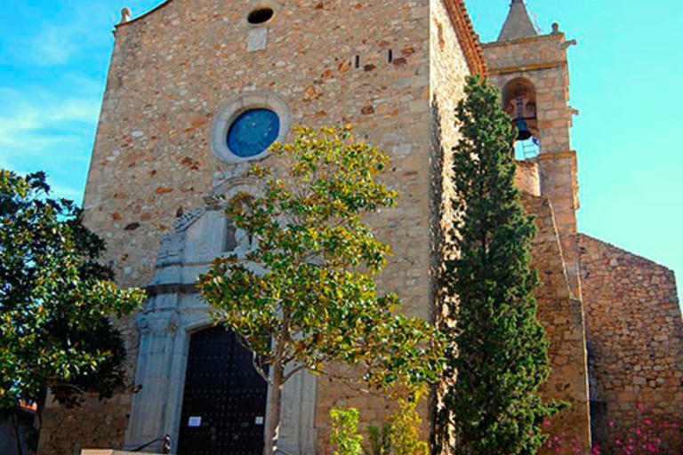

Visita · Platja d'Aro
Santa Maria de Castell d'Aro és una església protegida com a Bé Cultural d'Interès Local a municipi de Castell i Platja d'Aro (Baix Empordà). És una església d'estil gòtic tardà amb façana…